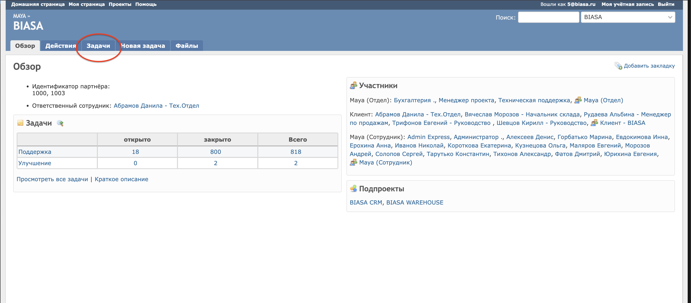
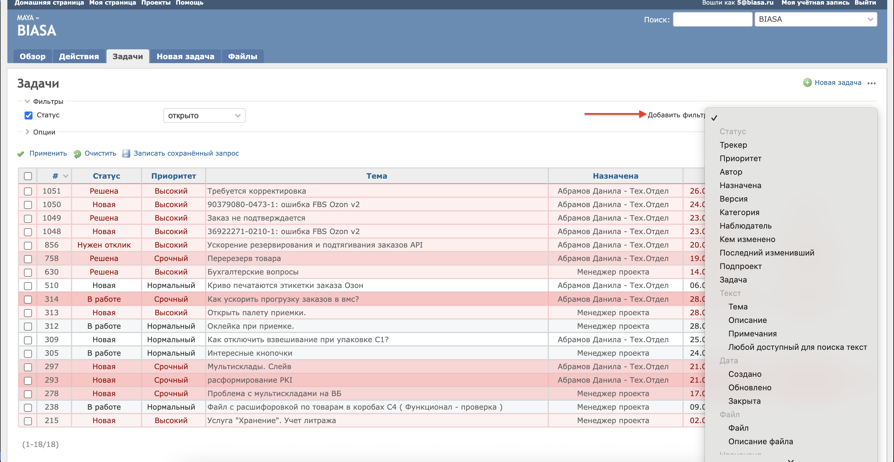
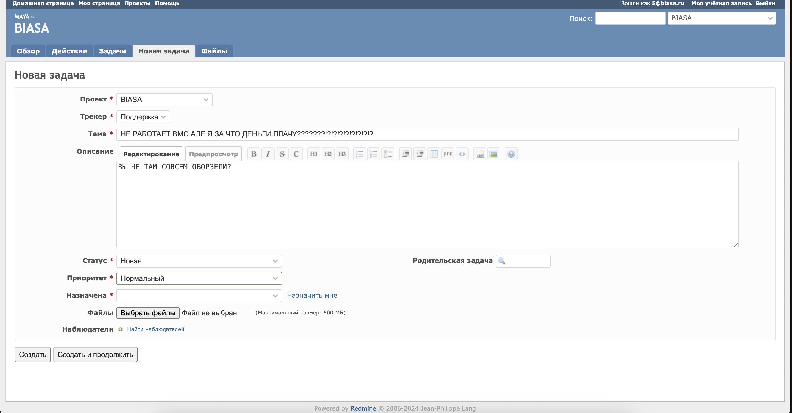
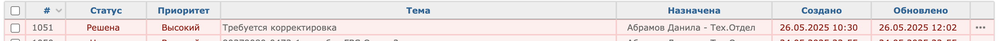
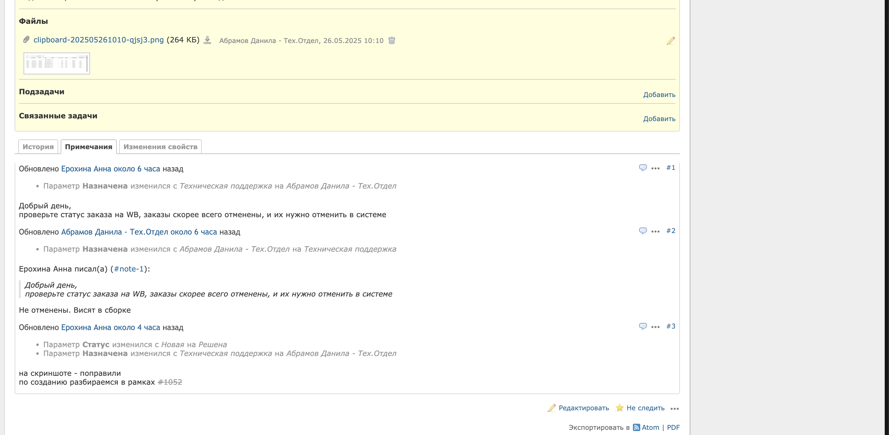
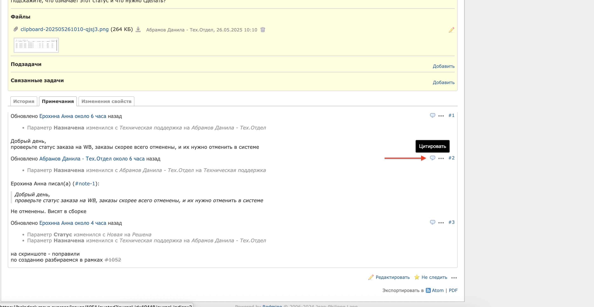
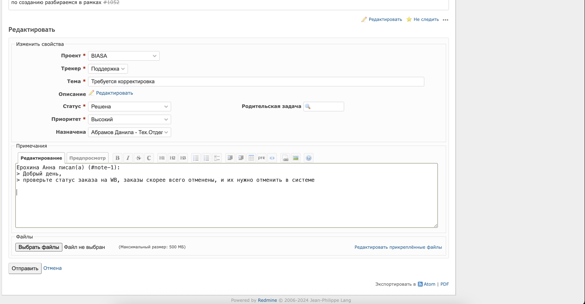
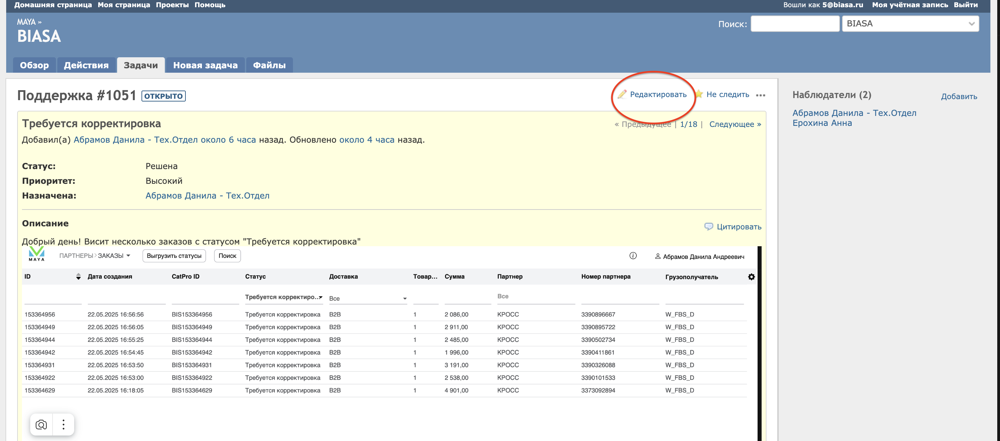

У Maya MWS есть тикет-система тех.поддержки - *HelpDesk*
При возникновении любых вопросов, связанных с WMS - смело пишите туда тикет.
Как писать тикеты в HelpDesk
Для начала, авторизируемся в х.д (доступ, пароль и прочая инфа есть вот *ТУТ*
,
в файле .txt)
На начальной странице есть несколько блоков, в том числе: задачи, разделенные на новые, активные и решенные,
список участников проекта
и подпроекты.

Переходим в вкладку "Задачи"
В открывшемся меню видим: список задач, их статус, на кого назначена, когда открыта и дату изменения статуса
В этом же меню можно кликнуть на любую тему, чтобы попасть в задачу, прочитать ее суть и все комментарии.
Так же, справа есть удобная фильтрация по любому ключу, будь то тема, сотрудник на которого назначена задача и
прочие фильтры

Чтобы создать задачу - кликните на кнопку "Новая задача"
В следующем меню вы увидите редактор задачи.

Подробнее по кнопкам:
Трекер и проект - оставляйте по умолчанию
Тема - тема задачи. Кратко изложите суть проблемы
Описание - максимально подробно описываем суть проблемы, по желанию и возможности лучше добавлять скрины.
Чем лучше задача будет описана - тем быстрее т.п поможет ее решить.
Статус - оставляйте без изменений. Конкретно в случае создания новой задачи статус всегда будет "Новая"
Приоритет - приоритетность задачи делится на: Низкий, Нормальный, Высокий, Срочный и Немедленно. Исходя
из названия статусов -
ясна суть. Чем страшней звучит его статус - тем важнее для вас и техподдержки скорость решения вопросов.
Срок исполнения тикета с статусом Низкий-Нормальный: 24 часа, Высокий-срочный - 12 часов ( в течение рабочего
дня)
Немедленный статус, по словам техподдержки Maya - самый экстренный статус. Задачи с таким статусом должны быть
выполнены в срок
до пары часов
В случае со статусами надо помнить то, что т.п. Maya - не круглосуточная. Это означает, что задача, созданная в
17:59 в пятницу,
по которой установлен статус "Немедленно" - не означает, что сотрудники тп ответят в течение заявленных
пары часов.
Скорее всего такой вопрос будет отложен до следующей недели.
Назначена - поле для выбора ответственного за решение задачи. Если вы задаете техподдержке вопрос по работе WMS
- выбирайте в выпадающем списке
"Техническая поддержка". При возникновении потребности в уточнении вопроса - техподдержка напишет комментарий к
задаче, изменит ее статус и перекинет задачу обратно на вас
Последним пунктом значится - приложение. Сюда можете прикладывать фото/документы/файлы и прочие имеющие
отношение к задаче материалы.
После заполениня всех полей нажимайте кнопку "Создать". Созданная вами задача отобразится в общем списке задач на главной странице.
При получении ответа от тех.поддержки вы получите уведомление на почту ( на данный момент в helpdesk зарегана
только 1 почта. При желании
можно попросить ту же техподдержку добавить еще 1-2-10 почт. Равно как и насоздавать там миллион
пользователей)
Как ответить на уже созданную задачу:
Например, техподдержка дала ответ на заданный вами ранее вопрос. В таком случае на странице с активными темами
вы увидите следующее:

... вы увидите, что у задачи изменился статус (напрмер, статус при создании был "Новая", а теперь "Решена"),
изменилось лицо, на которое
была назначена задача. Это означает, что техподдержка дала свой комментарий к задаче. Чтобы посмотреть что они
там такого понаписали - тыкайте на
тему задачи.

Попав на страницу с задачей, в самом верху, на желтом фоне будет описанная вами задача. Нас интересуют ответы от
тп
Ниже после сути задачи уже идут комментарии и логирование изменений. Конкретно на скрине из примера видно,
что
Анна Ерохина (сотрудник техподдержки) сначала перекинула задачу обратно на меня, а так же выдвинула
предположение по задаче.
Еще ниже, я в свою очередь опроверг ее предположение и снова перекинул задачу на техподдержку
Таким образом происходит обсуждение задачи.
Как ответить на комментарий техподдержки и уточнить свой вопрос?
Ответить на комментарий тп можно 2-мя способами: явно процитировать или просто добавить сообщение без цитат
Чтобы ответить с цитатой (обычно удобней просто оставить коммент в задаче через способ 2. Ответ с цитатой
применим в случае
если в задаче участвуют более 2-х рыл.), нажимаем на вот эту хрень:

После нажатия на значок с сообщением (я хз как он правильно называется), нас сразу перекинет на редактирование
своего сообщения
внутри этой же задачи, подставив цитируемое сообщение:

Внутри редактирования не меняем ничего, кроме: Статус(по желанию, можно и не менять. Главное, не сменить
статус на "Закрыта"
,
иначе задача закроется и вы его долго искать будете), Приоритет(если задача за время решения потеряла свою
актуальность),
и обязательно меняйте лицо, на которое задача назначена. Если вы не измените поле "Назначена" обратно на
техподдержку, вы запутаете и себя
и тех поддержку.
В самом низу будет редактируемое поле, куда можно написать свой комментарий. При написании коммента не стирайте
то, что обозначено знаком ">"
Просто сделайте небольшой отступ и пишите что нужно.
После комментирования, нажимайте "отправить". Ваш комментарий будет добавлен в общую переписку
Добавляем сообщение без цитат:
Попав в задачу по клику на тему, остаемся чуть выше на странице.
Справа-сверху есть 2 кнопки: "Редактировать" и "Следить"/"Не следить". В данном случае, кнопка "Редактировать"
означает
ответить в теме, а не редактировать всю тему. Нажимаем на нее

По нажатию на кнопку, нас снова перенесет в самый низ и откроется меню с редактированием своего комментария.
Общий алгоритм работы с своим комментарием - тот же, только кода с вставкой цитаты нет и писать свой коммент
можно с самого верха поля.